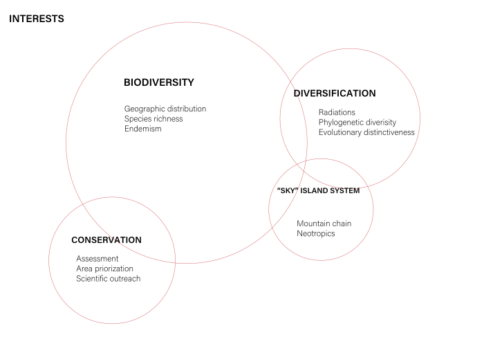
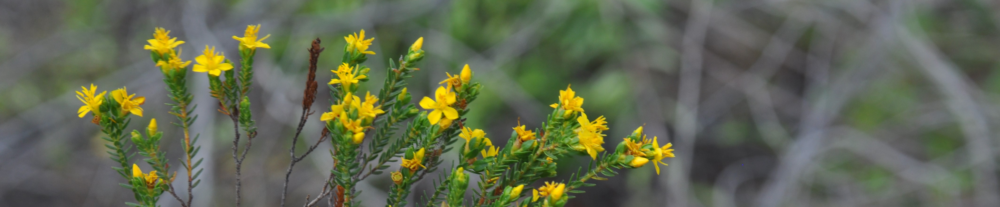
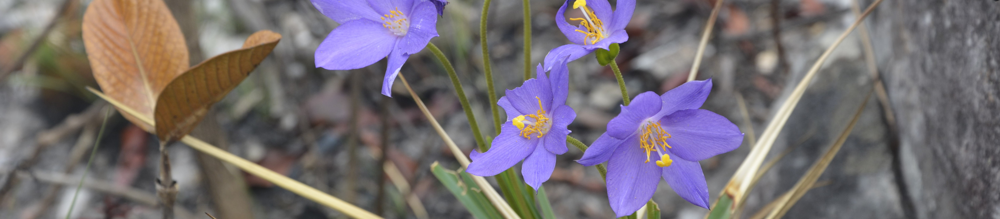

My name is Raquel C. Pizzardo and I am currently an undergrad
student in the Laboratory of Systematic, Evolution and Biogeography of Vascular Plants at the University of
São Paulo in Brazil.
Education
BSc. in Biological Sciences, Universidade de São Paulo, SP, Brazil
(February 2017 – July 2021 (expected)).
Backgroud
My research interest began while taking genetic and botany classes as a freshman at the University of São Paulo.
My first experience in the field was as a technician in a lab of Ecology and Genetic Evolution, where I assisted grad students with their projects.
After that, and to pursue my fascination with botany, I became a member of the Laboratory of Systematic, Evolution and Biogeography of Vascular Plants.
My first project was to infer the impact of climatic changes in the flora of campo rupestre, a unique rocky field ecosystem in the east of Brazil.
Since then, during my career as a researcher, I have been interested in exploring the relationship between geographic distribution,
evolutionary processes, and diversification, focusing on “sky” island systems and expanding to the field of conservation analyses.
International research collaboration with the Royal Botanic Garden, Kew, in the United Kingdom, has allowed me to work
as a conservation biology researcher and to develop significant scientific outreach skills. Currently, I am working with different approaches to
incorporate evolutionary history into conservation polities, focussing on environments with rapid and recent radiations.
I truly enjoy field expeditions as well as several other outdoor activities. As a botanist, I like to spend my free time in parks,
always accompanied by my dog and a good cup of coffee.
Research

Experience
Climatic change and naturally fragmented habitats. Supervisor: Thais N. C. Vasconcelos
One of the greatest challenges in conservation sciences is to define areas of priority for efficient
preservation of the biodiversity in face of growing anthropic pressure and forecasted climate changes.
Due to the intimate relationship between organisms and their physical environment, areas of elevated species
richness and endemism levels are particularly prone to biodiversity loss resulting from anthropogenic
environmental damage. This can be particularly difficult when we consider naturally fragmented habitats,
as the Espinhaço Range in the east of Brazil, a mountain chain with high values of both species richness and endemism.
To assess whether the distribution of species endemic of the chain regions will be affected differently by predicted
scenarios of climate change, I performed species distribution models for different species that differ in their
distribution. This approach corroborates previous studies suggesting that the endemic flora of the
Espinhaço Range is under severe threat from climate change.
Risk assessment, evolutionary distinctiveness and “sky” island system. Supervisor: Thais N. C. Vasconcelos; Co-supervisor: Eimear NicLughadha
Global biodiversity is under extreme pressure as a consequence of human activity, being the decline in plant diversity particularly noticeable.
Approaches that consider hot spots of biodiversity, as well as endemism areas, are commonly used to identify priority regions for conservation.
However, although this is an effective method, conserving the evolutionary process is now also important, demanding new analysis that incorporates this feature.
Mountain chains, “sky” island systems, had called attention for their impressive biodiversity, being the high numbers of species richness and endemism result
from rapid and recent radiations. In this project, I am interested in evaluating the conservation of the evolutionary history of a particularly diverse
environment in Brazil, the campo rupestre ecosystem, and the mountain chains associated with it.
To assess that, I performed the Evolutionary Distinct and Globally Endangered (EDGE) and phylogenetic diversity methods for the
Chamaecrista ser. Coriaceae (Fabaceae) clade. With this approach, we are now able to understand the evolutionary history of this group and
the challenges in applying conservation policies that link these factors in megadiverse environments.
My work has been supported by Fundação de Amparo à Pesquisa do Estado
de São Paulo (FAPESP).
Publications

Please email me if you would like access to pdf versions.
3Pizzardo RC, NicLughadha E, Rando JG, Forest F, Walker B, Prochazka L,
Nogueira A, Vasconcelos TNC (in prep.). Conserving the evolutionary history
of rapid and recent radiations: a study case with Chamaecrista ser. Coriaceae (Fabaceae)
in the campo rupestre.
2Pizzardo RC, Andrino CO, Vasconcelos TNC (submitted). The effect of climate in the
distribution and conservation of some Paepalanthus (Eriocaulaceae) species endemic to the
Brazilian Espinhaço Range. Acta Botanica Brasilica
1Pizzardo RC, Vasconcelos TNC, Nogueira A, Prochazka L, Cota MMT, Rando JG (2021).
Field Guide: Espinhaço Range and Chapada dos Veadeiros, BRAZIL - Chamaecrista ser. Coriaceae (Fabaceae) of
campo rupestre. Field Museum.
Selected presentations
2020 & 2021 “Conserving the evolutionary history of rapid and recent radiations: a study case with an endemic clade in the campo rupestre” (speaker).
28th USP International Symposium of Undergraduate Research (virtual).
2020 "Conserving the evolutionary history of rapid and recent radiations: a study case with Chamaecrista ser. Coriaceae (Fabaceae)
in the campo rupestre" (video-poster). I Digital Symposium of Systematics and Evolution of Plants (virtual).
2019 “The challenge of tracing conservation policies in naturally fragmented habitats:
the flora of the Espinhaço Range in a scenario of climate change” (poster & speaker).
70th Brazilian National Conference of Botany (Maceió – AL, Brazil).
2019 “The challenge of tracing conservation policies in naturally fragmented habitats:
the flora of the Espinhaço Range in a scenario of climate change” (poster). 39th Regional Botany
Meeting (MG, ES and BA; Diamantina - MG, Brazil).
Teaching & Outreach

Teaching Experience
2019 & 2020 (two semesters) Undergraduate Teach Assistant in “Diversity and Evolution of
Photosynthetic Organisms” (Universidade de São Paulo, Brazil). Assisted in the preparation and
presentation of practical classes and support of students during extra class activities and studies.
2018 Undergraduate Teach Assistant in “Genetics” (Universidade de São Paulo, Brazil).
Assisted in the preparation of practical classes with Drosophila and support of students
during extra class activities and studies.